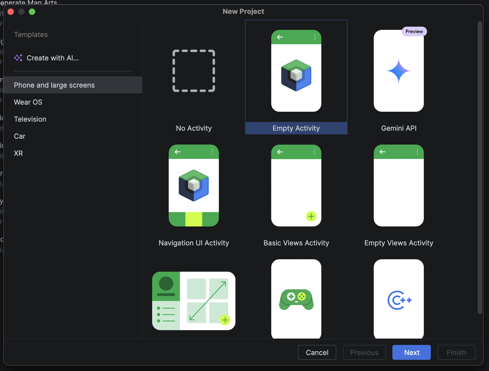
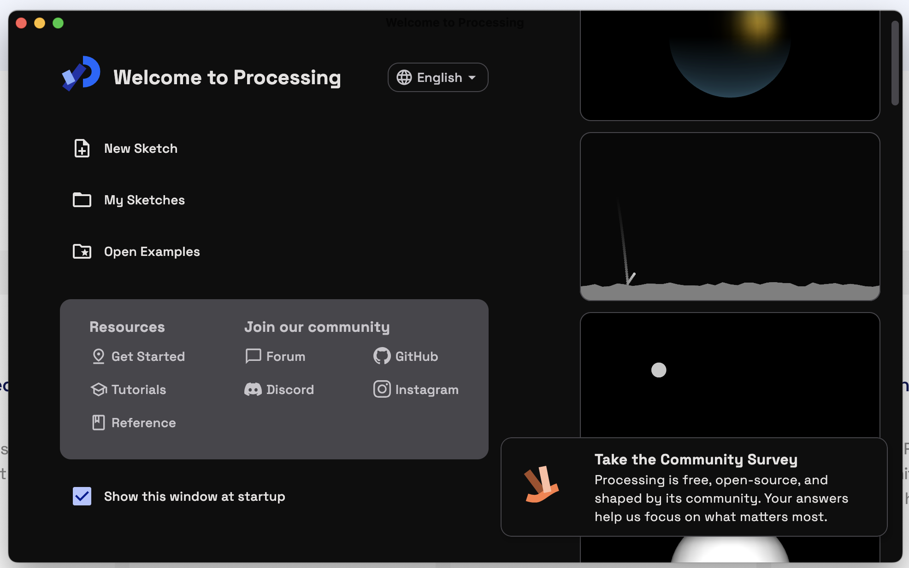
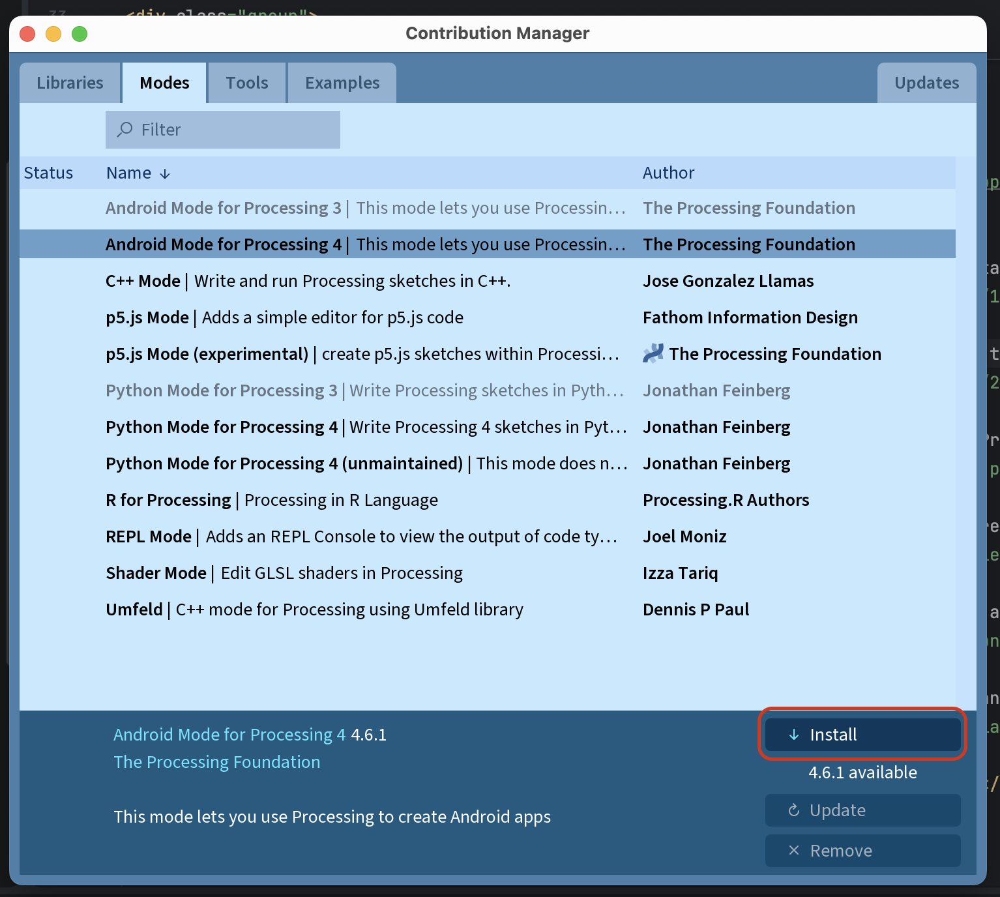
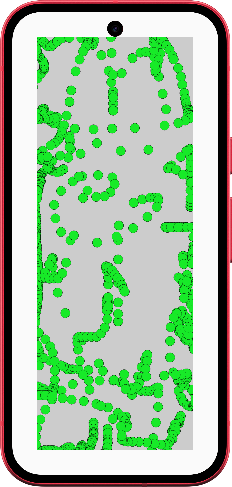

Processing with Jetpack Compose
How to config a modern android project and run a processing sketch inside a jetpack compose android view.
Introduction
We all know that since 2026 Android has become Compose-first, so if you want to start a new android application it is recommended to build 100% of your UI using Jetpack Compose. If inside this application you are planning to use a processing sketch, this tutorial is for you.
1. Create an Android project if you haven't already created one. Start with selecting a Compose Empty Activity:

2. Enter project name, package name and minimum SDK version. After that click on 'Finish' button:

3. Now we need to get the processing core library we are going to use inside our app, This step is outside Android Studio and you will need to first download the Processing launcher.

4. You should click on the 'New Sketch' button and after go to the 'Manage Modes' menu:

5. Select 'Android Mode for Processing 4' and click 'Install':

6. After installing, inside your Processing folder you are going to find the file 'processing-core.zip' (mine was under Documents/Processing/modes/AndroidMode). You need to rename it to processing-core.jar and move it to the folder app/lib inside the android project you just created before:

7. Now inside your project's app level 'build.gradle.kts' you will add the following implementation inside dependencies:
dependencies {
...
implementation(files("lib/processing-core.jar"))
...
}
8. Create a new file called MyKotlinSketch and write down your sketch using Kotlin and everything will work fine because of the interoperability with Java, but if you have a Java sketch and just want to copy/paste it, no problem it will work fine too:
// MyKotlinSketch.kt
import processing.core.PApplet
class MyKotlinSketch: PApplet() {
override fun settings() {
fullScreen()
}
override fun setup() {}
override fun draw() {
if (mousePressed) {
fill(23F, 234F, 40F)
ellipse(mouseX.toFloat(), mouseY.toFloat(), 50f, 50f)
}
}
}
9.a Our sketch needs a fragment to run within, so the next step is to add the fragment-compose dependency to our project. First, you need to add the following line to your 'libs.versions.toml':
// libs.versions.toml
[versions]
fragmentVersion = "1.9.1" //use the version from the link.
[libraries]
androidx-compose-fragment = { group = "androidx.fragment", name = "fragment-compose", version.ref = "fragmentVersion" }
9.b Then you will add this line to your app/build.gradle.kts:
// app/build.gradle.kts
dependencies {
...
implementation(libs.androidx.compose.fragment)
...
}
10. Create a file called MyProcessingFragment, it will be the fragment that will extend the PFragment from the processing library. It accepts a processing sketch in the constructor, so we will add an instance of our MyKotlinSketch. This way the fragment will work as the container for our sketch:
// MyProcessingFragment.kt
import processing.android.PFragment
class MyProcessingFragment : PFragment(MyKotlinSketch())
11. Finally, the code of our 'MainActivity' should be as following:
class MainActivity : FragmentActivity() {
override fun onCreate(savedInstanceState: Bundle?) {
super.onCreate(savedInstanceState)
enableEdgeToEdge()
setContent {
ProcessingWithComposeTheme {
AndroidFragment<MyProcessingFragment>(
modifier = Modifier
.fillMaxSize()
.systemGestureExclusion()
)
}
}
}
}
This will give you a processing sketch running full screen in an android application built with Jetpack Compose as following:

Some important points about this implementation:
- FragmentActivity: It is required to use the AndroidFragment composable.
- .systemGestureExclusion(): Using this we prevent triggering gestures when drawing on the screen.
fullScreen() at settings block of MyKotlinSketch: It allows our sketch to fill all the space available of its parent. For example, if we used .padding(50.dp) alongside with .fillMaxSize() (or even a fixed size), we would have a result like that:

The project used to write this tutorial is available here.